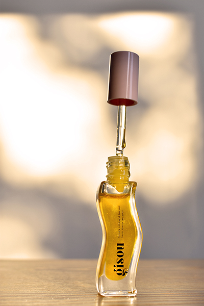
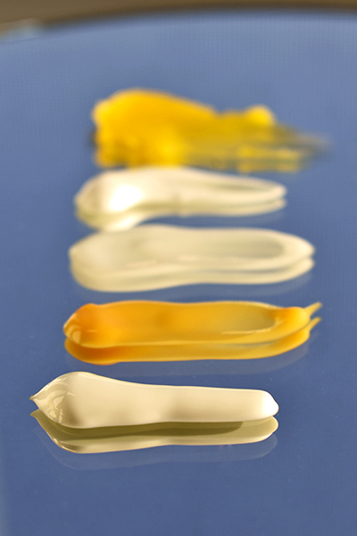

Picturing Design
Program: Illustrator
Just like any other skill, learning Photoshop becomes easier with hands-on practice, and this is exactly what this project was for. As part of a Design Fundamentals class, the aim was to create a cohesive series of five photographic posters that captured the different elements and principles of design. The inspiration for this project came from exploring the nuances of daily tasks, one of which is a consistent skincare routine. Through the capturing of movement, texture, contrast, pattern, etc. in the different skincare products one can use, this poster series highlighted the beauty of simplicity.

